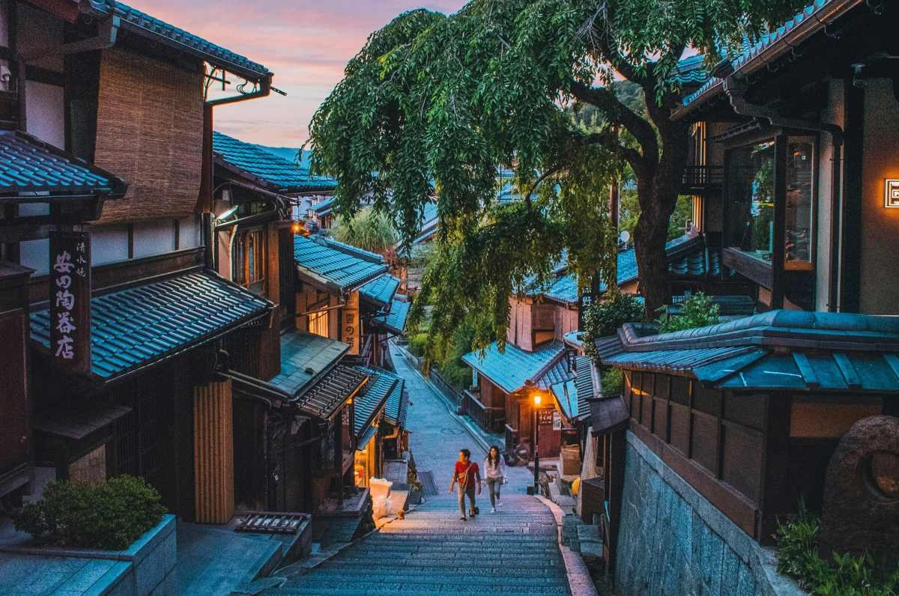
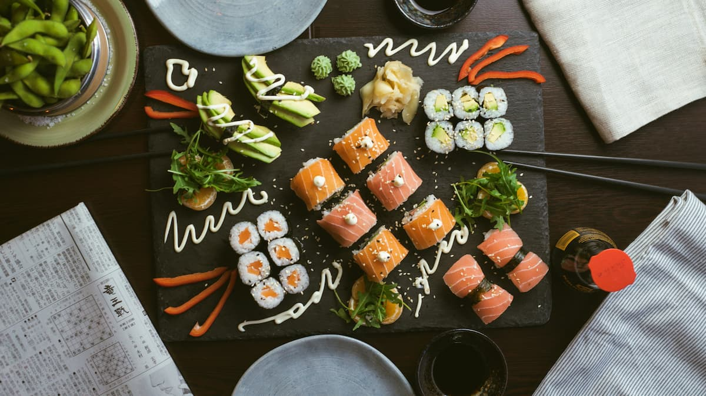
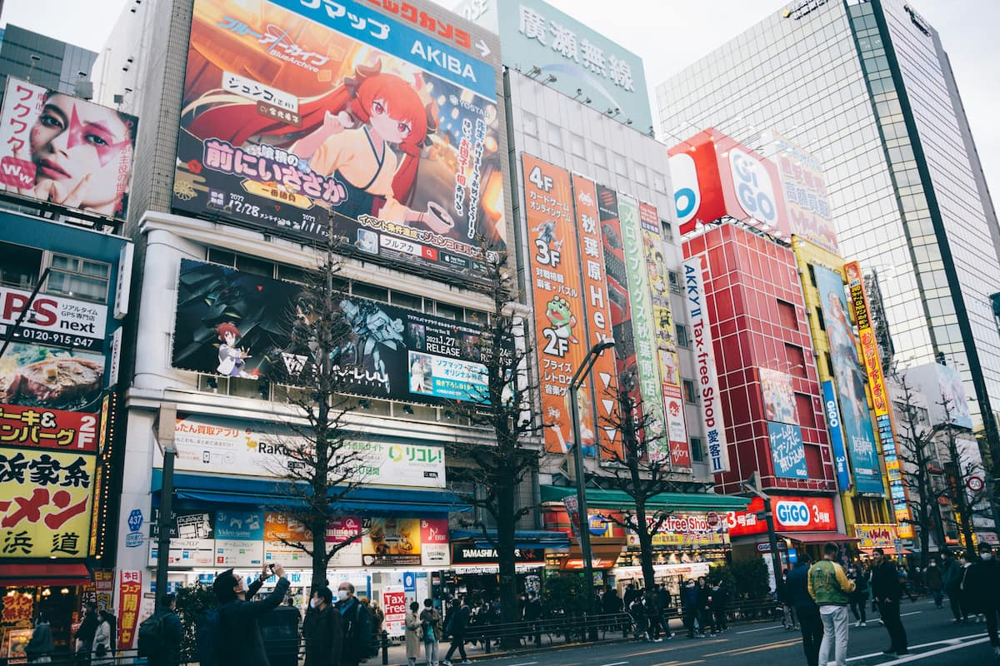

Cities & Landscapes

From Tokyo’s neon streets to Kyoto’s historic temples and Okinawa’s beaches, Japan’s cities offer unique experiences for every traveler.
Explore Beyond the Guidebooks
Japan offers far more than famous landmarks. Explore vibrant cities, unforgettable food, and pop culture experiences that bring your journey to life.

From Tokyo’s neon streets to Kyoto’s historic temples and Okinawa’s beaches, Japan’s cities offer unique experiences for every traveler.

Japanese cuisine reflects culture and history. Enjoy ramen shops, sushi counters, street food, and regional specialties.

Anime, gaming, and cultural festivals are a major part of modern Japan. Events and conventions connect travelers with creative communities.